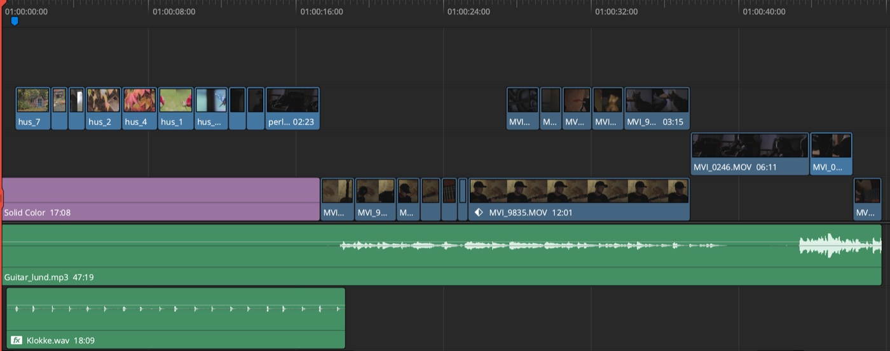
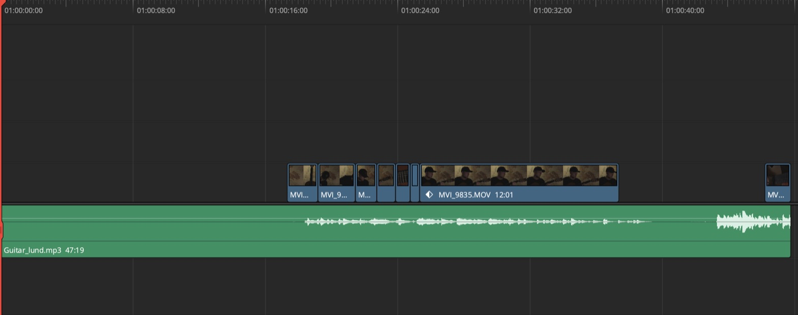
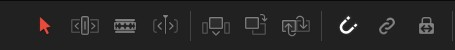

Før vi går i gang · 5 min
Facit og puzzle
Du skal ikke blive færdig. Det er en øvelse i at lægge rigtige optagelser ned på en rigtig timeline, ikke en test. Du arbejder i én timeline hele vejen, og de tre bidder er bare delmål. Efter frokost starter alle fra en færdig intro.
-
Spil Opg 3 FACIT igennem
Den ligger i 03 OPGAVE 3. Det er dette, du arbejder hen imod, ikke noget du skal kopiere klip for klip.

-
Åbn Opg 3 START
Det tomme stykke i starten er det, du skal fylde ud. De klip, der står, er landemærker: dem kan du orientere dig efter.

-
Kend tre værktøjer
Over timelinen sidder en lille værktøjslinje. Selection (A) vælger og flytter klip. Blade (B) skærer et klip over, hvor du klikker. Snap (N) får klippene til at hægte sig til hinanden, så du ikke efterlader et hul uden at opdage det.

Delmål 3A · 15 min
De første fem klip
Gør selv
Fyld hullet fra starten: find det rigtige klip i Importeret, sæt In og Out, og træk det ned. Sammenlign med FACIT. Delmålet er de første fem klip.
Delmål 3B · 4 + 15 min
Klip 6 til 10, og ret til undervejs
-
Byt om på rækkefølgen
Marker et klip, og tryk Shift + Ctrl + , (Windows) / Shift + Cmd + , (Mac) for at bytte det med klippet før. Brug . i stedet for , for klippet efter. Det er hurtigere end at trække, og du laver ikke huller.
-
Trim en kant
Med Trim (T) trækker du i et klips start eller slutning uden at flytte selve klippet.
-
Lyd og billede hver for sig
Klip med lyd og billede er linket: flytter du det ene, følger det andet med. Vil du flytte kun det ene, så højreklik på klippet, og vælg Unlink.
Gør selv
Klip 6 til 10 på plads. Brug swap og trim, hvor det driller.
Delmål 3C · 3 + 15 min
De sidste fem klip
-
Zoom ind og ud af timelinen
Hold Alt (Windows) / Option (Mac) nede, og brug musehjulet. Er du faret vild, viser Shift + Z hele timelinen igen.
Skyderen, hvis du hellere vil trække end bruge musehjulet.
Gør selv
Klip 11 til 15. Spil det hele igennem, og sammenlign med FACIT.
Jeg nåede ikke alle klip
Helt i orden. Det vigtige er at have prøvet håndgrebene på rigtigt materiale, ikke at nå i mål. Efter frokost starter alle fra Opg 4 START, hvor introen er færdig.
Hurtigt færdig?
Læg lyden ind. Lydfilen ligger i Importeret sammen med klippene. Læg den på et lydspor under billederne, og ram starten, så den passer med FACIT. Bagefter kan du bygge videre på filmen efter introen.